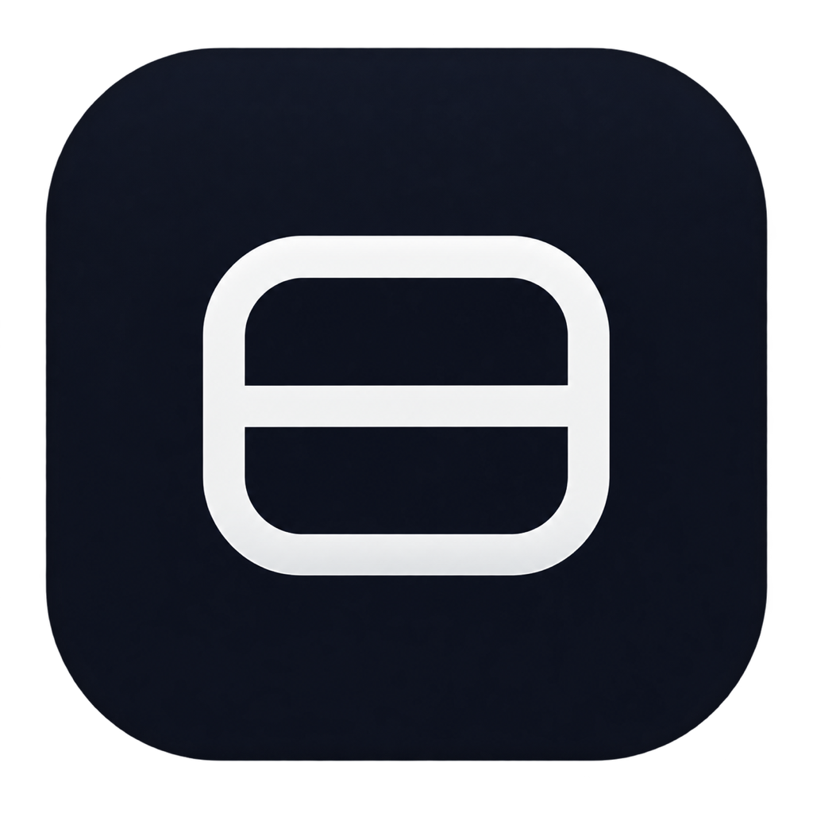

TuckBar专为刘海屏及图标较多的 Mac 用户精心设计。让菜单栏恢复清爽，同时随心所欲呼出与操作每一个应用。
多种触发方式，总有一种顺手适合你的工作流
| 动作 | 操作方式 |
|---|---|
| 展开 / 收起菜单栏 | 单击状态栏图标，或使用全局快捷键 ⌥ Option + B |
| 手势展开 / 收起 | 光标停留在菜单栏区域，向上/向左滚动展开，向下/向右滚动收起 |
| 悬停查看 | 鼠标移动至 TuckBar 图标上方微停即可自动展开 |
| 浮岛快捷管理 | 在浮岛中右键任意收纳图标，即可快速改设为“常显”或“在访达中显示” |
| 打开偏好设置 | 右键图标选择“偏好设置…”，或按下快捷键 ⌘ Command + , |
TuckBar 代码遵循 MIT 协议完全开源。所需辅助功能与屏幕录制权限仅用于原生菜单点击转发及 1:1 图标快照，绝不上传任何数据。